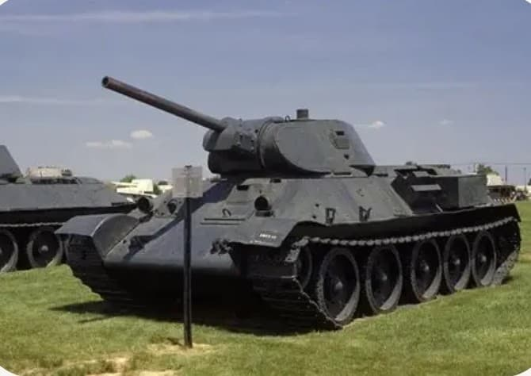
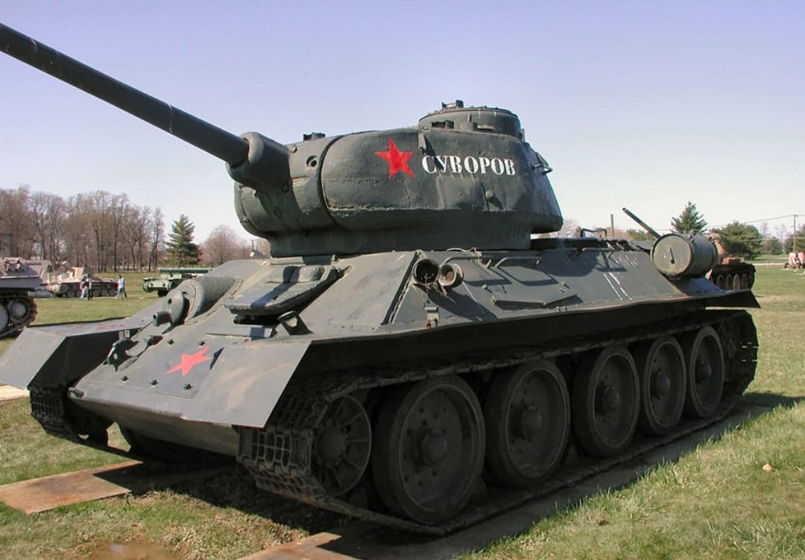

Le T‑34 est le char moyen soviétique le plus célèbre de la Seconde Guerre mondiale. Conçu pour combiner mobilité, blindage incliné et puissance de feu, il devient l’un des véhicules les plus influents du conflit. Ses versions principales, le T‑34/76 puis le T‑34/85, marquent une évolution majeure dans la doctrine blindée soviétique.

Première version de série, équipée du canon de 76 mm. Son blindage incliné et sa mobilité surprennent les forces allemandes en 1941. Il devient le symbole de la résistance soviétique durant les premières années de la guerre.

Version modernisée avec une tourelle élargie et un canon de 85 mm, capable de affronter les Panzer IV tardifs, Panther et Tiger à courte et moyenne distance. Il devient le char standard de l’Armée rouge jusqu’à la fin du conflit.
Le T‑34/76 révolutionne la conception des chars grâce à son blindage incliné et sa mobilité. Le T‑34/85 apporte la puissance de feu nécessaire pour affronter les chars allemands de fin de guerre. Ensemble, ils forment l’un des blindés les plus produits et les plus influents de l’histoire militaire.
Page du Musée HOP WW2 – Section véhicules soviétiques